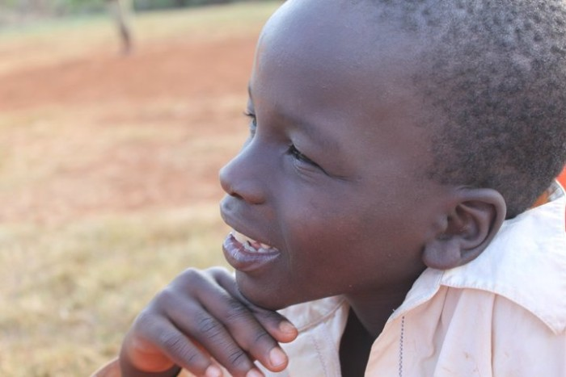

Meet the Team
The heart of Mojake is our dedicated staff — local caretakers, social workers, and leaders.

James Ombati
Founder & DirectorA former teacher from Kisii, James has dedicated his life to child welfare. He ensures every child feels loved and has access to education.

Grace Akinyi
Social WorkerGrace counsels children and connects them with relatives. Her warm smile makes every child feel safe and heard.
Mama Lucy
Senior House MotherWith 10 years of experience, Mama Lucy ensures the children are well-fed, healthy, and go to school with a smile.
Mary Moraa
House MotherMary helps with homework and organises playtime. She's known for her delicious ugali and heartfelt stories.
Emily Kerubo
Nurse & NutritionistEmily monitors children's health and prepares nutritious meals. She also teaches hygiene practices.
Daniel Nyakundi
Volunteer CoordinatorDaniel welcomes visitors and organises community outreach. He's passionate about sharing Kisii culture.